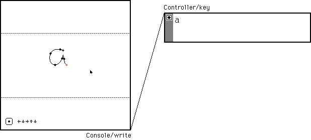

Porporo is an operating system for Varvara.
Consider a network of Varvara instances, each with its own event handlers, private memory, capable of sharing data and trigger vector events in other instances via wires connecting the device pages.
Porporo is designed to allow for roms to work both independently on systems where multi-tasking is unnecessary, and as a coordinated network of nodes in cases where programs needs to be connected with each without an underlying OS.
This thin software layer merely allows for the spawning and destruction of instances, as well as routing of device ports between instances. For example, connecting a keyboard application's Console/write port, to another application's Controller/key port, would trigger the Controller/vector. Effectively making for an on-screen keyboard.